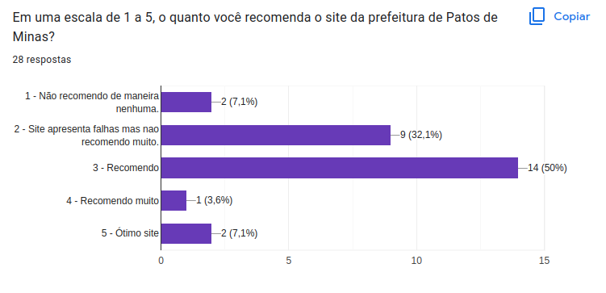
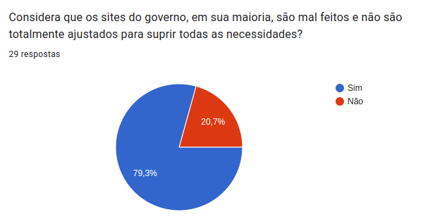

Perfil do Usuário
Introdução
A fim de aprender mais sobre o usuário e suas necessidades foi utilizado um formulário, com intuito de obter dados como seu grau de satisfação com sites do governo e de suas necessidades, como será apresentado a seguir.
Metodologia
Para o levantamento de dados relativo ao perfil de usuario foi utilizado um formulario do google forms.Obitvemos em media 29 respostas no periodo de 5/12 a 7/12 no formulario a seguir: Formulario
Resultados
1 - Qual a sua faixa etária?
Para a obtenção de dados relacionados a faixa etária foi utilizado a seguinte pergunta do formulário na Figura 1.

Figura 1:faixa etária
Fonte:Resultados adquiridos pelo formulário
2 - Você utiliza frequentemente a internet?
Para a obtenção de dados relacionados a Frequência de uso foi utilizado a seguinte pergunta do formulário na Figura 2.

Figura 2: Frequência de uso
Fonte:Resultados adquiridos pelo formulário
3 - Já precisou utilizar o site do governo?
Para a obtenção de dados relacionados a Utilização do site foi utilizado a seguinte pergunta do formulário na Figura 3.

Figura 3: Utilização do site
Fonte:Resultados adquiridos pelo formulário
4 - Já acessou o site da Prefeitura de Patos de Minas?
Para a obtenção de dados relacionados ao acesso ao site foi utilizado a seguinte pergunta do formulário na Figura 4.

Figura 4: Acesso ao site
Fonte:Resultados adquiridos pelo formulário
5 - Você já sentiu necessidade de utilizar algum site do governo?
Para a obtenção de dados relacionados a necessidade de utilização foi utilizado a seguinte pergunta do formulário na Figura 5.

Figura 5: Necessidade de utilização
Fonte:Resultados adquiridos pelo formulário
6 - Sentiu satisfeito com a interface do site?
Para a obtenção de dados relacionados à satisfação com a interface foi utilizado a seguinte pergunta do formulário na Figura 6.

Figura 6: Satisfação com a interface
Fonte:Resultados adquiridos pelo formulário
7 - Acho que o site tem uma usabilidade intuitiva e simples?
Para a obtenção de dados relacionados a usabilidade do site foi utilizado a seguinte pergunta do formulário na Figura 7.

Figura 7: Usabilidade do site
Fonte:Resultados adquiridos pelo formulário
8 - O que você recomendaria de mudança no site?
Para a obtenção de dados relacionados a recomendação do site foi utilizado a seguinte pergunta do formulário na Figura 8.

Figura 8: Recomendação do site
Fonte:Resultados adquiridos pelo formulário
9 - Em uma escala de 1 a 5, o quanto você recomenda o site da prefeitura de Patos de Minas?
Para obtenção de dados relacionados a recomendação do site foi utilizado a seguinte pergunta do formulário na Figura 9. 
Figura 9: Recomendação do site
Fonte:Resultados adquiridos pelo formulário
10 - Considera que os sites do governo, em sua maioria, são mal feitos e não são totalmente ajustados para suprir todas as necessidades?
Para obtenção de dados relacionados ao Suprimento de necessidades foi utilizado a seguinte pergunta do formulário na Figura 10.

Figura 10: Suprir necessidades
Fonte:Resultados adquiridos pelo formulário
Dados obtidos
Observando de maneira geral alguns dados obtidos pelo forms percebemos que as pessoas possuem uma idade entre 19 a 24 anos e que em algum momento precisaram usar sites do governo. Abaixo segue um resumo dos perfis de usuário determinados pelo forms.
- Idade: 19 a 24 anos
- Frequência de uso da internet : constante.
- Já precisou utilizar algum site do governo: 93,1% sim.
- Já sentiu necessidade de utilizar algum site do governo : 93,1% sim.
- Se sentiu satisfeito com a interface do site ? : 69% não.
- Acha que o site tem usabilidade intuitiva e simples: 65,5% não.
- O que você recomendaria de mudança no site? 11,1% nada, entretanto segue-se uma média nos outros problemas.
- Em uma escala de 1 a 5, o quanto você recomenda o site da prefeitura de Patos de Minas? : Apesar de algumas falhas 50% recomendaria o site.
- Considera que os sites do governo, em sua maioria, são mal feitos e não são totalmente ajustados para suprir todas as necessidades? : 79,3% sim.
Conclusão
A partir da análise das respostas apresentadas anteriormente, conclui-se que em sua grande maioria os sites do governo , necessitam de atualizações e melhorias frequentes, dito que muitas vezes não possuem uma usabilidade nem uma acessibilidade desejada para um determinado tipo de usuário.Entretanto observa-se que a partir dos dados obtidos os usuários que se dispuseram a acessar o site e verificar estes atributos enxergaram alguns problemas como:
- O site não é totalmente intuitivo.
- Possui uma interface desagradavel.
Entretanto apesar desses problemas a maioria dos usuários ainda assim recomendariam o site provando que apesar de alguns defeitos o site acaba por cumprir suas principais tarefas.
Referência bibliográfica
BARBOSA, Simone Diniz Junqueira; DA SILVA, Bruno Santana. Interação humano-computador. Elsevier, 2010.
Histórico de versões
| Versão | Data | Descrição | Autor | Revisor |
|---|---|---|---|---|
| 07/12/2022 | 1.0 | Criação do documento | João Anacleto | João Gabriel Elvas |
| 07/12/2022 | 1.1 | Criando e adicionando informações sobre o Perfil de Usuário | Matheus Salim | João Gabriel Elvas |
| 14/12/2022 | 1.2 | Realizando alteraçōes e modificaçōes no documento | João Gabriel Elvas | Matheus Salim |
| 16/01/2023 | 1.2 | Realizando alteraçōes e modificaçōes no documento | João Anacleto | João Gabriel Elvas |